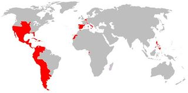

De: La Frikipedia, la enciclopedia extremadamente seria.
De: La Frikipedia, la enciclopedia extremadamente seria. De: La Frikipedia, la enciclopedia extremadamente seria.
| De la serie imperios antiguos: | |||||
| Imperio Español de los Reyes y Curas | |||||
| |||||
| Lema: FRANCO, FRANCO, QUE TIENE EL CULO BLANCO... | |||||
| Himno: Els Segadors
| |||||
| 
| |||||
| Capital(es) | Badajoz | ||||
| Mayor ciudad | Marbella | ||||
| Lenguas oficiales | Catalán, gallego y euskera | ||||
| Religión oficial | Analfabetismo | ||||
| Gobierno | Monarquía Armada | ||||
| Sacro Emperador de Todas las Españas y Otras que Desconocemos | Alfonso <inserte número romano aquí> | ||||
| Fecha de fundación | En el año 1490 d.C. | ||||
| Caída | Cuando nació Fidel Castro | ||||
| Edad de oro | En la era de los emigrantes extremeños | ||||
| Periodo de Estancamiento o reseción | En la Guerra de los Cien Años | ||||
| Máxima Extensión | El Mundo!!! | ||||
| Forma de economía | Todo el dinero es para los curas, los nobles, los reyes y la guerra en los Países Bajos | ||||
| Estados que se despacho | Norteamérica, África y Asia | ||||
| Población calculada | 100000000 inútiles y 20 soldados | ||||
| Moneda | El sueldo ourensano, los doblones extremeños, el vellón leonés y la pica de Flandes | ||||
| Zona horaria | Zona Cero | ||||
| Legado(s) | Que todo dios hable en castellano de Valladolid y rece a Azathoth | ||||
| ¿Por que se vino abajo? | Por culpa de los Beatles | ||||
| | |||||
«Ai si eu che pego voçe me mata!!!»
~ Don Sebastião contra el Imperio Español
«Arghhhh!!!»
~ Un indio al conocer el Imperio Español
«Arghhhh!!!»
~ Un dictador azteca o inca al conocer el Imperio Español
Llamamos Imperio Español a todas las fincas que antes eran propiedad del Rey de España y sus familiares, antes de la primera guerra yanqui, cuando las colonias se despertaron y declararon su independencia de una nación que estaba muy atareada luchando contra Napoleón y sus 100 mil hijos. Mucho después todas las ex-colonias de España, a excepción de Brasil, volvieron a unirse conformando la Unión Latina que viene a tener la misma expansión que el antiguo imperio.
La historia del Imperio Español es corta y comienza cuando España estaba llena de gente pero no había industria así que cogieron tres cayucos y emigraron a América, liberando a los pobres indios de las sanguinarias dictaduras de aztecas e incas por el paternalismo del Vaticano y Madrid (o, como decían antes, "la corona y el altar").
Pero los españolitos de a pie seguían siendo pobres (no así los curas, la Inquisición y los nobles que no daban palo al agua) y tenían que seguir emigrando. Gracias a Los Tercios S.A., muchos españolitos pobres emigraron a los Países Bajos, Alemania, Italia y Francia.
Cuando los Reyes Católicos iniciaron su lucha fratricida contra Darth Vader enviaron una flotilla del CSIC a investigar el cultivo de marihuana en alta mar, pero una tormenta hizo que el almirante Cristobal Culón se fuera pal otro lado del planeta, a la India, donde los hindúes se oponían a la pacífica evangelización de la Santa Inquisición y habían hecho potaje con algunos de los curas. Por esos años mandaba en España un holandés feo y tonto, Carlos I de España, V de Alemania y III de Gondor, al cual se le rebelaron los comunistas de Castilla. Tras derrotarlos los envió a México con Hernán Cortés, donde fundaron el PRI y destruyeron la dictadura azteca.
Uno porquero extremeño que estaba salvando a unos ETS, así que junto con unos colegas se fue pal sur (cuando los indios le habían dicho que se fuese a los USA a joder Sioux). Allí destruyó la dictadura inca, pero cuando se estaban repartiendo el botín, se peleó con su socio, Che Guevara y montaron una guerra civil donde murieron ambos, quedando Perú para Felipe II.
Para no pelearse con los portugueses, Felipe II mató al rey portugués, Don Sebastiāo, y así pudo juntar más fincas nel Imperio Aspagnol (pedacitos de África y Asia). Esto hizo que se pelease contra el Imperio Británico (el cual sólo sabía enviar piratas pa joder) y el Imperio Francés (que destruyó a los Tercios gracias a un ejército de putas con sida, gonorrea y sífilis).
Para que los indios fuesen felices y pudiesen seguir disfrutando de América les envió a tropecientos curas parásitos y esclavos negros para que trabajasen por ellos. El oro y la plata eran enviados por barco (que eran robados por los piratas ingleses y holandeses) a Sevilla, y de allí iba a parar a Alemania para pagar a los Tercios y que estos propagasen la cultura dolménica por toda Europa a la vez que perdían batallas en la Guerra de Arauco; mientras en las colonias de Ultramar los españoles se arrejuntaban con las indias (no como los ingleses que las masacraban) y crearon a las diosas del amor, las Mulatas.
Pero también existió la colonización interior: Castilla fue convertida en una fábrica de cereal, Galicia en carne de cañón, Cataluña en taller de costura, Euskadi en una ferretería, el País Llionés en lugar de turismo de montaña, Andalucía en discoteca... Todo ello propició que los españolistas emigraran en masa a Argentina para ir de putas sin pasar por el confesionario y crear el tango.
El Imperio tenía los días contados, ya que el Vaticano fue invadido por los nazis y dejaron a España sola defendiendo la religión musulmana frente a los Evangelistas, con los que se tuvieron que enfrentar en varias guerras altamente costosas:
Estas tres batallas y la Guerra de los Cien Años, junto con la lucha contra los turcos, los alemanes, los rusos, los ingleses, los franceses y los marcianos hizo extenuarse tanto a los españoles que desde entonces no han vuelto a levantarse en armas, excepto para matarse entre ellos por el reparto de las subvenciones en 1936.
Afortunadamente las mulatas siguieron volviendo a España y hablando en castellano, hasta que en 1898 los yanquis conquistaron Cuba e impusieron un régimen comunista para que nadie emigrase a otros países, con el fin de que las mulatas se quedasen solo para ellos.
Se calcula que el Imperio Español se extendía desde la Península Ibérica hasta el Fin del Mundo, más o menos. Pero por dar un número de verdad diremos que ocupaba un gritón y medio de kilómetros cuadrados. Estaba presente en los 5 continentes y se preparaban para conquistar al Imperio Británico cuando las guerras de Independencia de Portugal y Cataluña los ocupó en otra clase de asuntos. Actualmente planean re-expandirse a través de las telecomunicaciones con teléfonos fijos, pero por ahora son extremadamente mediocres en ese campo y no lo pueden hacer
Los reyes de España eran los dueños de todo el Imperio Español, así que en vez de repartirse el botín con el resto de españoles se lo gastaban en convertir a los holandeses al satanismo, pelearse contra los turcos por mor de la pesa de la sardina... a cambio de ello los españoles de a pie tenían que pagar impuestos (menos los nobles y curas), servir en el ejército por unas perras lejos de casa, servir en la Marina estatal gratis... si no lo hacías te condenaban unos añitos a remar en las galeras, ir a África a esclavizar negritos, ir a Perú a cavar o pegar con el látigo a los esclavos mineros, ser llevado a Filipinas a vigilar los talleres textiles, ser colgado en la horca en la plaza del pueblo y poner tu DNI por donde pasaba tododiós pa que tododiós se enterase.
Si eras indio en las colonias españolas tendrías derecho al paro por trabajar solo ya una hora, un trabajo digno de un maharajá, te pondrían casa propia (con vistas al mar), no pagarías impuestos abusivos y tendrías inmunidad ante cualquier crimen.
Si eras negro en las colonias españolas tendrías derecho al paro, seguridad social, asistencia sanitaria gratuita, privilegios fiscales e inmunitarios, así como llevarse un 15% del PIB de lo que recaudaba el Imperio en su botín de guerra en Flandes.
A pesar de todas estas cosas tan lindas toda América, África y Asia se independizó del Imperio Aspagnol. Hoy en día solo Falange Aspagnola quiere recuperar las viejas fincas.
En América aprovecharon que los indios tenían una moral sexual más abierta para poder desvirgarse a gusto (ya que en España todo el mundo iba a misa y no tenían tiempo de follar). Gracias a los indios destruyeron a los imperios azteca e inca, desarticularon a los terroristas de Sendero Luminoso y a las F.A.R.C., haciéndose con el control del mercado de la "Fariña" de Colombia, la cual usaron para alimentar a los Tercios Españoles (aunque los franceses sigan diciendo que el motor de los Tercios haya sido el poder violinar a mozas rubias y gordas, que en España no había porque las españolas eran todas pobres y sucias). Como los españoles no podían follar, emborracharse ni ver la MTV en España, que se lo tenían prohibido la Inquisición, miles de ellos emigraron a América y fundaron Chile, Argentina, Colombia, Perú, Cuba, México, Nicaragua, Texas...

Al ver los españoles que los americanos no trabajaban ni bien ni rápido se fueron a África a contratar a miles de negros, que sí sabían trabajar rápido, bien y de puta madre, pero como no querían ir a América (por eso de la violencia racial) los españoles los secuestraban o hacían que los musulmanes del lugar entrasen tierra adentro a esclavizar unos cuantos, así durante cuatrocientos siglos.
Cuando España perdió su imperio (por culpa de Dios) y perdió sus colonias en América, se fijaron en que África también tenía minas, esclavos, tabaco, algodón, oro y diamantes, así que en 1856 comenzaron a pelearse contra los moros para invadir el norte de África (el resto ya estaba ocupado por los imperios Británico y Portugués). Sin embargo los mayores problemas los dio el Imperio Francés, que también quería esas fincas, pero al final vinieron los marcianos y destruyeron a las tropas españolas y fundaron Marruecos.
Los españoles se fijaron en Júpiter, el mayor planeta del Sistema Solar, por eso de que era el más grande y ellos querían ser los más grandes del Universo, así que fueron allá y lo conquistaron, gastando miles de vidas españolas y ecuatorianas, para al final encontrarse que una lluvia de ácido les destruía una y otra vez los chiringuitos. Como el era el planeta más grande del sistema, la Monarquía siguió enviando españoles allí durante doscientos años más, hasta que se descubrió otro planeta más grande aún. Allá se fue la legión Española a conquistarlo, pero por el camino se encontraron un agujero de gusano que los llevó de nuevo a Júpiter.
Allí se conquistó China y Japón, pero tras unas cuantas cagarrías y malaria, el ejército se fue pal sur e invadió Filipinas, donde se quedaron a plantar arroz y vender sus hijas (tenidas con la población local) al prostíbulo inglés más cercano. Finalmente Filipinas fue vendida al Imperio Yanki tras llevar estos allí una fragata armada con fusiles láser frente a las fragatas españolas que iban armadas con flechas y venablos.
Los muy analfabetas conquistadores lograron tener territorios de muchos de sus vecinos:
Portugal: desde 1580 hasta 1640. Además se incluyeron todos los territorios del Imperio portugués. Reino de Nápoles: el actual sur de Italia, junto con las islas de Sicilia, Cerdeña y Malta. Franco Condado y Charolais: en la zona centro-oriental de Francia. Ducado de Milán (Milanesado): en el norte de Italia. Países Bajos Españoles: los actuales países de Bélgica, Luxemburgo y Países Bajos, y parte de los territorios del actual norte de Francia, como Artois. Tradicionalmente se considera a los Países Bajos como parte del Imperio español18 19 (tesis mayoritaria en España y los Países Bajos entre otros); pero existen autores como Henry Kamen que proclaman que esos territorios nunca se integraron en el Imperio español, sino en las posesiones personales de los Austrias.20 Rosellón: en el actual sur de Francia, entre Andorra y el Mediterráneo. Presidios de Toscana en la península itálica. Niza: ciudad actual del sur de Francia, que contó también con la protección militar de la poderosa República de Génova. La mayoría de los territorios europeos españoles se perdieron en 1713 en la Paz de Utrecht.
Llívia: la villa de Llívia actualmente es un enclave y pequeño territorio situado al sur de Francia que pertenece a España, cerca a la frontera de ambos países. Se trata de un municipio situado a 153 kilómetros al norte de la capital de su provincia, Gerona, rodeado en su totalidad por territorio francés como resultado del Tratado de los Pirineos de 1659. Gibraltar: la plaza fuerte de Gibraltar actualmente es un territorio de ultramar perteneciente al Reino Unido como resultado del tratado de Utrecht de 1713.
Cuando Magallanes dio la vuelta al mundo, al pasar por estas islitas dejó a unos cuantos grumetes gallegos castigados en cualquier isla. Estos se arrejuntaron con las nativas y fundaron varios hoteles de marisco en Nueva Guinea.
Autor(es):